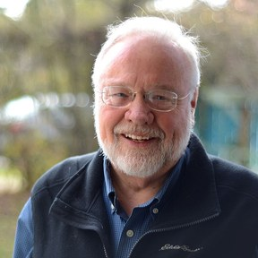
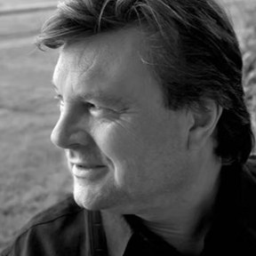
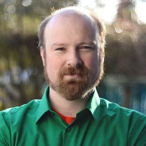
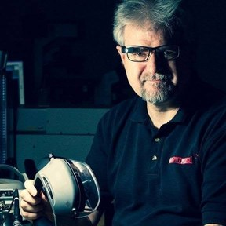
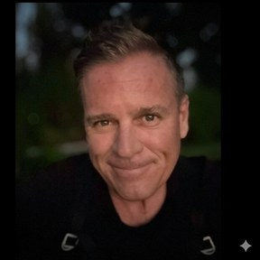
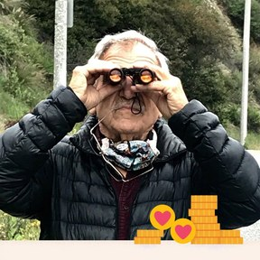
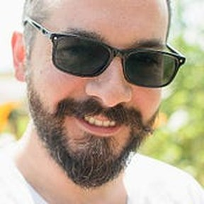

Humanity holds tools of extraordinary power: artificial intelligence, immersive reality, spatial computing, biosensing. It also faces growing fragmentation, loneliness, and loss of meaning. The question before us is not only what can we build? It is who are we becoming while we build it?
Luminara is a nonprofit research, learning, and humanitarian institute convening pioneers in XR, AI, neuroscience, education, medicine, design, the arts, and human development, so that technology strengthens rather than diminishes our humanity.
Illuminating the path of human becoming
Research
Consciousness studies through social coherence: disciplined inquiry into the conditions, technologies, and experiences that support human potential, with methods published alongside findings.
Lumina Lingua
A new language of light, sound, movement, and form, carrying what ordinary speech cannot.
Technology, AI & Information Systems
AI companions, biosensing, and spatial computing: modular sensing, visualization, and interaction architecture for perceiving self-state and connection.
Experience Architecture & World Building
Immersive experience design and multisensory systems that cultivate empathy, imagination, and awe.
Community Service
What is learned is given. Discoveries move outward into humanitarian and community contexts.
The institute's academy
Immersive journeys, mentorship, and cohort learning, culminating in community service.
Weekly gatherings: the Inspirational Series, Tuesdays at noon Pacific.
HeartBeam
An experience and an experimental instrument: two or more people intend connection, express it, experience it, visualize it, and measure it. HeartBeam is designed to explore whether measurable physiological relationships change when people intentionally connect, and is assigned to Research as its accountable home, with every division contributing.
Research is framed as inquiry; findings are published with their methods. Pioneers participate in sessions as contributors.
Partners, sponsors, and collaborating institutions advancing the mission together. Membership inquiries: tom.furness@luminara.institute
Four Bridge Groups carry the institute's enabling functions: Governance, Finance & Fundraising, Internal Communications, and Branding & Outreach.
Thomas A. Furness III · Chair
Daniel Oestreich · Vice Chair
Michele Atwater · Secretary
Trond Nilsen · Treasurer
Mark Billinghurst · Dave Lorenzini · Marty Perlmutter · Drew Stone · Stacy Whittle · Directors
Meet the board ↓
The institute grew from the Virtual World Society's futures work on a "Super Cockpit for the Mind" (2024), announced as a named initiative at AWE USA 2025, and became the Luminara Institute of Light, announced June 17, 2026. Luminara is a Washington nonprofit corporation.
The people carrying the light

Thomas A. Furness III
For nearly six decades, Dr. Furness has built interfaces between humans, machines, minds, and hearts: advanced cockpits, virtual and augmented reality, wearable and retinal displays, photonics. His students and colleagues have started more than 25 companies in the VR/AR space; The Light School and Luminara continue his lifelong exploration of light as instrument and metaphor.

Daniel Oestreich
A seasoned leadership consultant helping individuals, teams, and organizations liberate untapped potential through trust-building and communication. Co-author of Driving Fear Out of the Workplace and The Courageous Messenger.
Michele Atwater
A library-museum professional (MLIS, Emerging Technology) engaged in UX and usability research for immersive VR/XR spaces, with a background spanning information communities, stakeholder engagement, graphic arts, and early training in music, theatre, and dance.

Trond Nilsen
Engineer, scientist, game designer, and teacher (PhD, University of Washington), with pioneering AR strategy-game and command-and-control work at HITLab NZ. He helps lead Seattle VR, the Seattle Immersive Technology Association, the Virtual World Society, and the XR Guild.

Mark Billinghurst
Professor of human-computer interaction and IEEE Fellow; director of the Empathic Computing Laboratory, founder of HIT Lab NZ, and co-creator of the open-source ARToolKit. With over 650 research papers, he is among the most cited AR researchers in the world.

Dave Lorenzini
Builder of breakthrough XR, AI, and spatial computing technologies, including Keyhole (Google Earth) and ARc for Google X. As Director of Quantum Studio, he works on how AI understands and relates to physical space.

Marty Perlmutter
Interactive media pioneer: inventor of a sensory stimulation helmet in 1970, founder of Ghost Dance, and creator of the first interactive movie game. He works with Luminara to pioneer transcendent, transformative experiences as an alternative to first-person shooters.

Drew Stone
Virtual and immersive technology specialist with deep expertise in interactive experiences, XR event production, and collaborative community building. At Luminara he stewards the brand and visual identity, from the core palette to the subdivision color system.
Stacy Whittle
Writer, director, actor, and producer who has lived in four countries and worked in more than a dozen, with an MPA from the Middlebury Institute and a career spanning international development. Her film work has received Telly and Anthem Awards.
The institute shows its work
Programs, sessions, and findings enter a public record: session summaries, research methods published alongside results, and the working documents of an institute building itself in the open. The record begins publishing here following the organizational meeting.
Become a Pioneer
Subscribe to the newsletter, attend a session, join a program. Every Pioneer has a place to begin and a visible path forward.